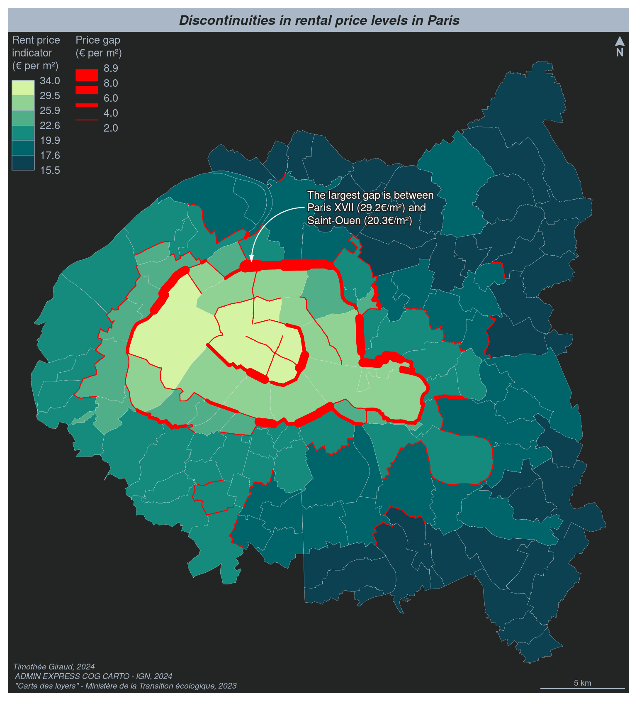

library(sf)
library(mapsf)
# import dataset
com <- st_read(dsn = "com.gpkg", layer = "communes", quiet = TRUE)
# get borders
com_bo <- mf_get_borders(com)
# compute the gap between prices
com_bo$diff <- abs(com_bo$loypredm2 - com_bo$loypredm2.1)
# set a cartographic theme
mf_theme(x = "darkula",
mar = c(.5, .5, 2, .5),
inner = FALSE,
pos = "center",
tab = FALSE)
# display a choropleth map of the rent price / m²
mf_map(x = com, var = "loypredm2", type = "choro",
breaks = "ckmeans", nbreaks = 6, pal = "Emrld", rev = T,
border = "grey90", lwd = .2,
leg_title = "Rent price\nindicator\n(€ per m²)",
leg_val_cex = .8, leg_val_rnd = 1, leg_pos = "topleft")
# display discontinuities
mf_map(x = com_bo[com_bo$diff >= 2, ], var = "diff", type = "grad",
breaks = c(2, 4, 6, 8, 8.9), lwd = c(1, 4, 10, 14), col = "red",
leg_title = "Price gap\n(€ per m²)",
leg_val_rnd = 1, leg_pos = "topleft", leg_adj = c(8, 0),
leg_val_cex = .8)
# Layout elements
mf_arrow("topright")
mf_credits(
txt = paste(
'Timothée Giraud, 2024\n',
'ADMIN EXPRESS COG CARTO - IGN, 2024\n',
'"Carte des loyers" - Ministère de la Transition écologique, 2023'
)
)
mf_title("Discontinuities in rental price levels in Paris")
mf_annotation(x = com_bo[order(com_bo$diff, decreasing = TRUE), ][1, ],
txt = paste0("The largest gap is between\nParis XVII (29.2€/m²) and\n",
"Saint-Ouen (20.3€/m²)"),
halo = TRUE, s = 2, col_arrow = "white", col_txt = "white",
pos = "topright")
mf_scale(5)